[1] "2023-11-27"Roda
Shots
Shots conceded
xG for and against, the numbers
Plot with xG
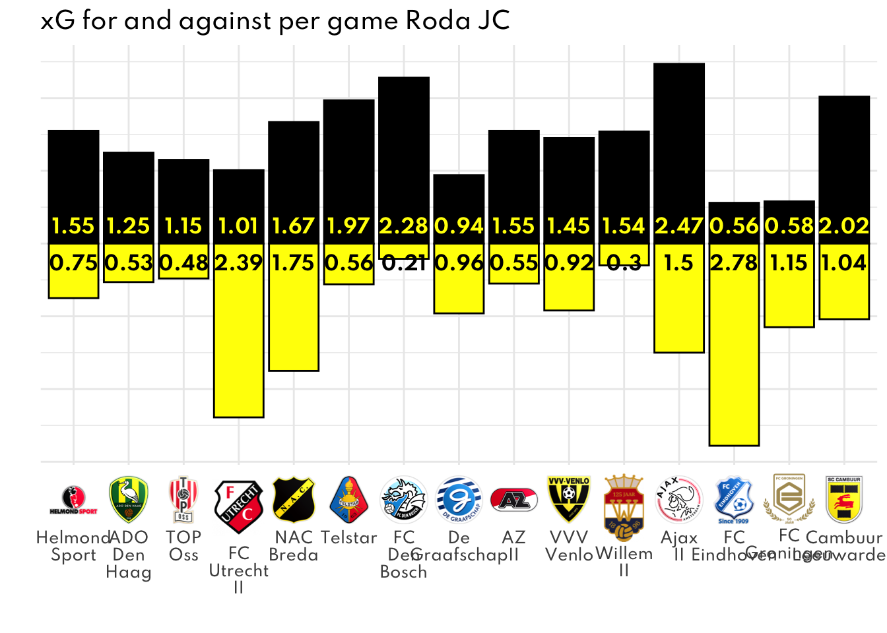
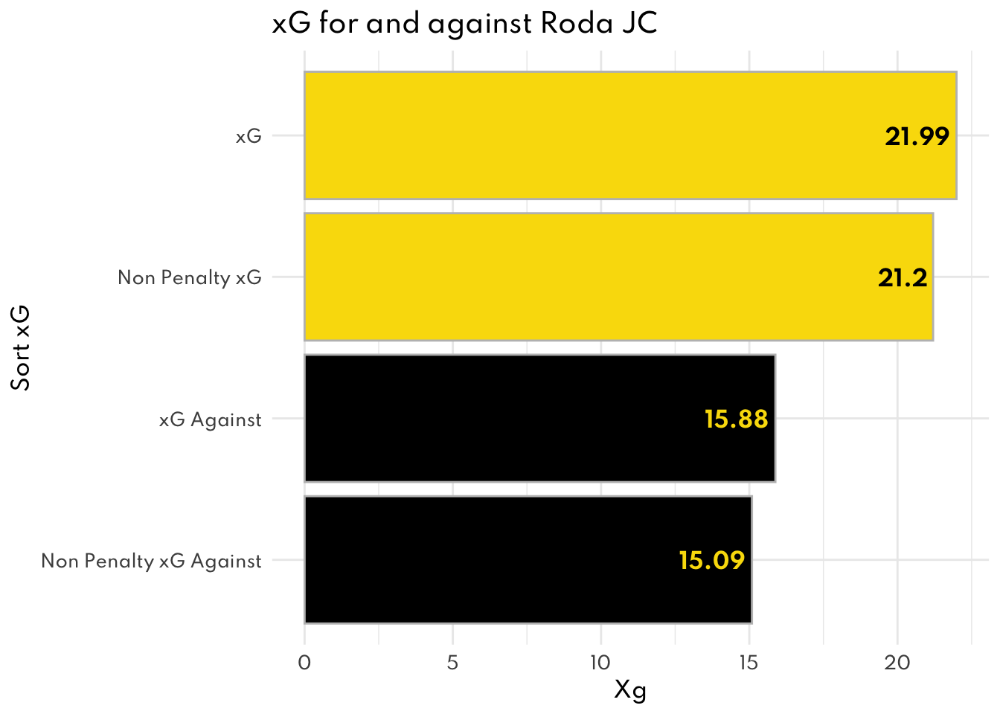
Take Ons/Dribbles
A take on is an attempted dribble past an opponent. You can click on the column names to sort them.
Top 5 attempted
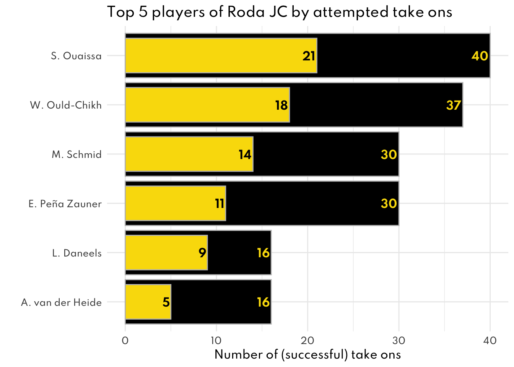
Top 5 successful
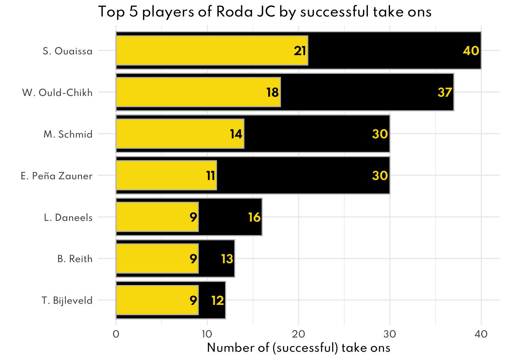
Ball Loss
Unsuccessful passes in own half
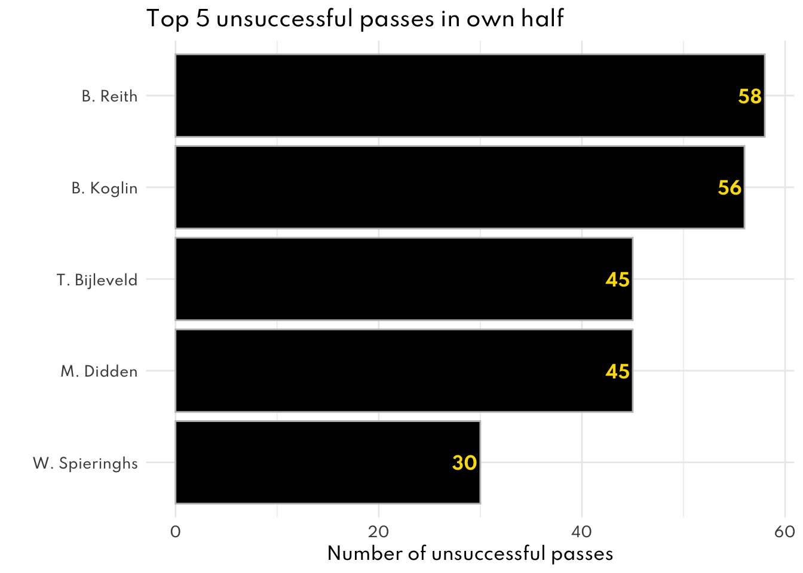
Other ball loss own half
(Dispossessed, bad touch, failed dribble/take on)
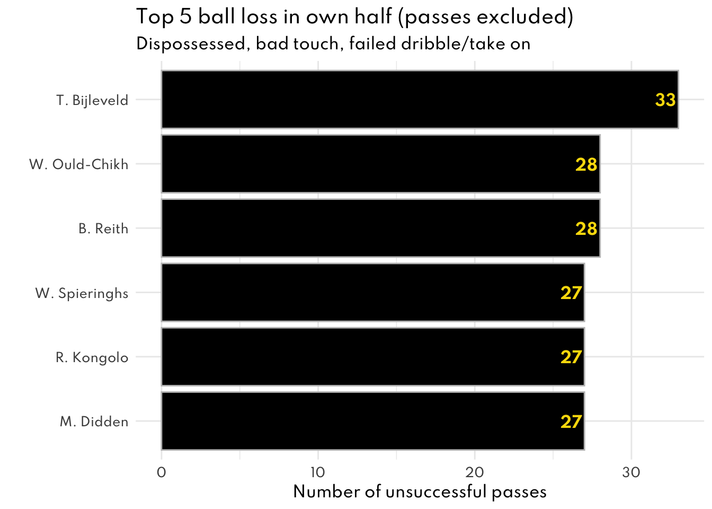
Crosses
Totally different from the data you sent me, but maybe useful?
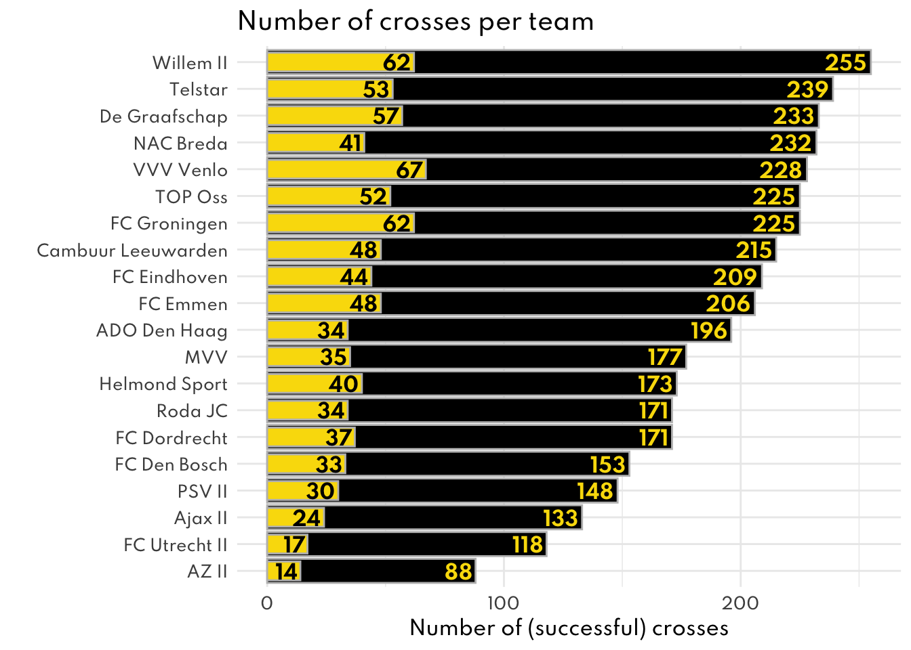
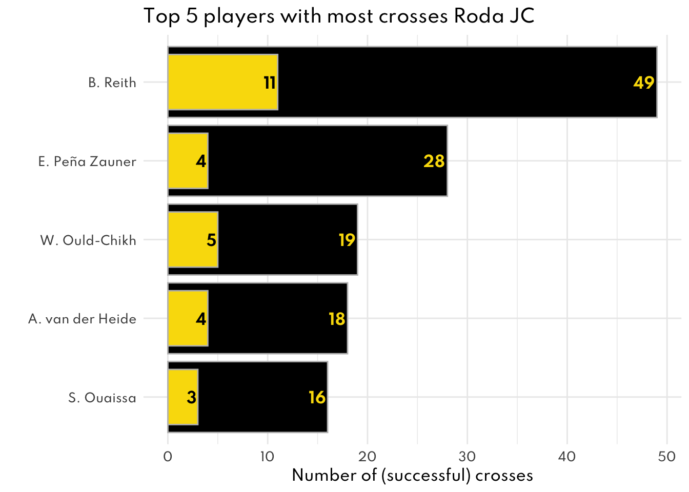
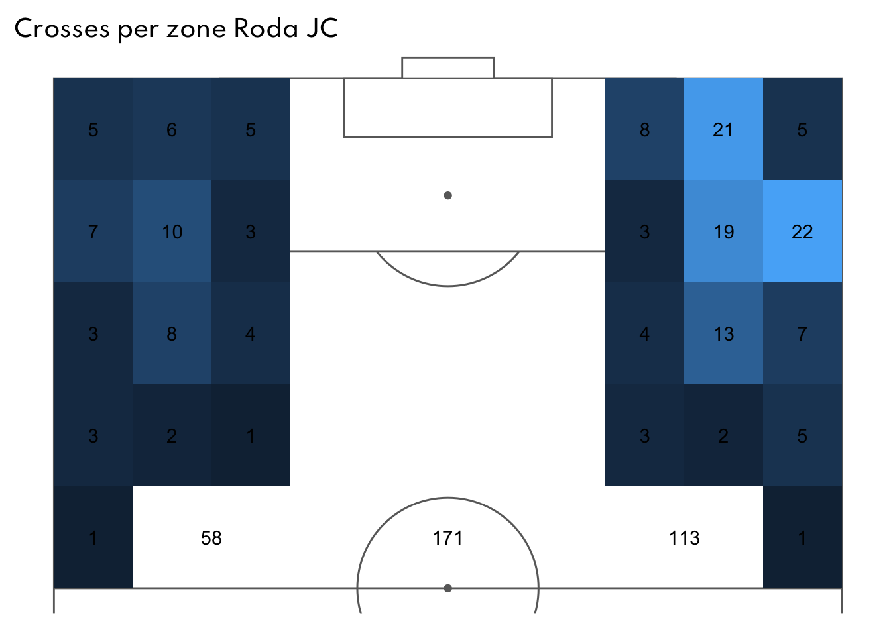
Bal recoveries opponents half
“Team wins the possession of the ball and successfully keeps possession for at least two passes or an attacking play”
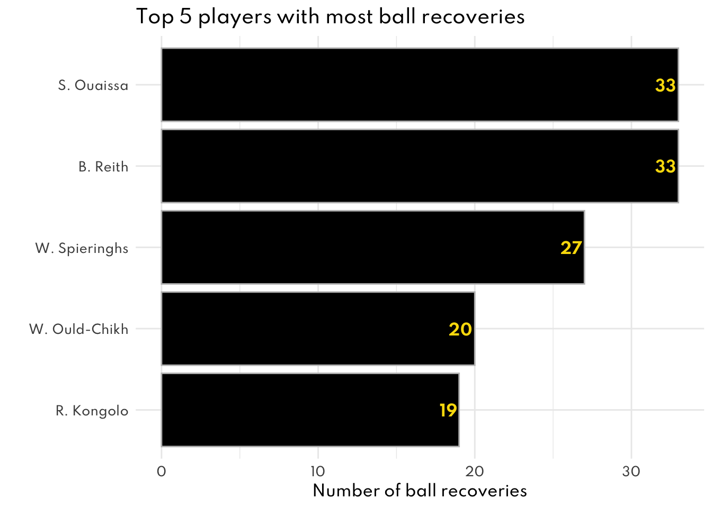
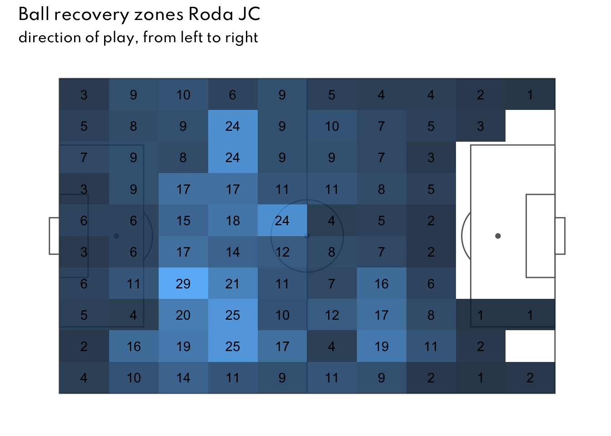